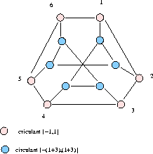
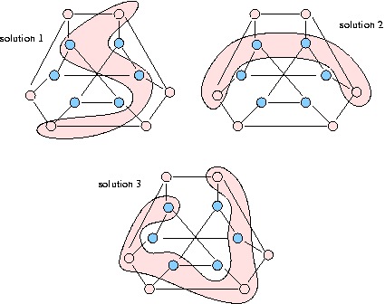

Arc-transitive (symmetric) graph
Kernel equation system symmetries, conjecture on kernel numbers, clustering
The Franlin graph is a famous 12-vertex symmetric cubic graph discussed in map colouring. It is constructed on X = {1,2,3,4,5,6} from the circulant {-1,1} and an irregular circulant {-(3+1),1+3}.
The Franklin graph supports 17 different kernel solutions, which give three kernel orbits following the automorphisms group of the graph. The unlabelled kernel number is therefore 3.
The automorphism group is determined by three actions:
When reducing the multiplicity of the kernel solutions along the orbits of the automorphic group actions, we stay in fact with only three independent kernel solutions, shown below. Solution 1 represents twelve kernel solutions, Solution 2 represents three, and Solution 3 represents two of the initial 17 kernel solutions.
